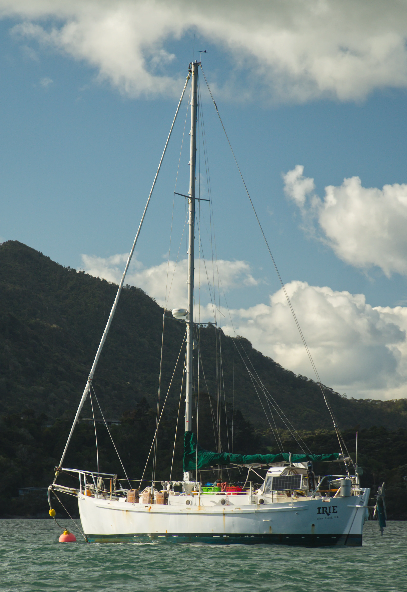
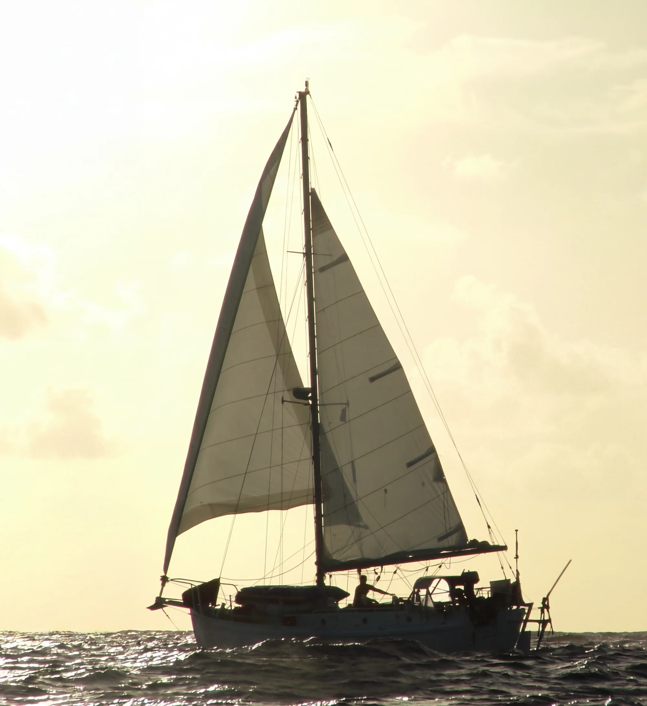
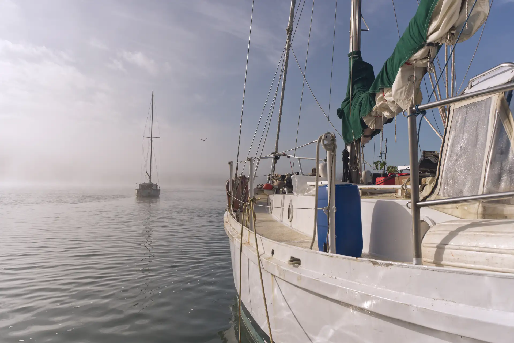
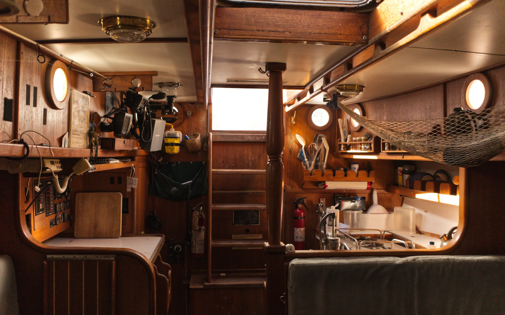
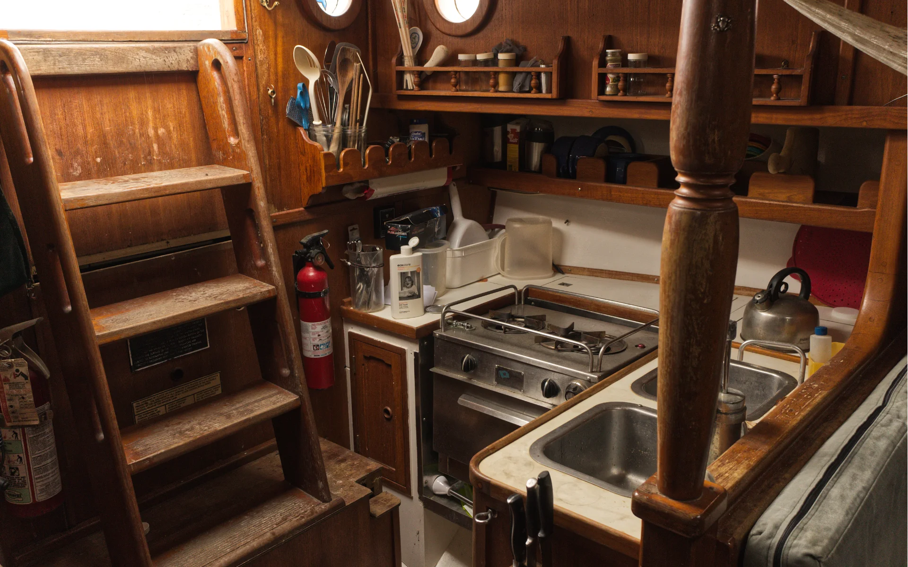
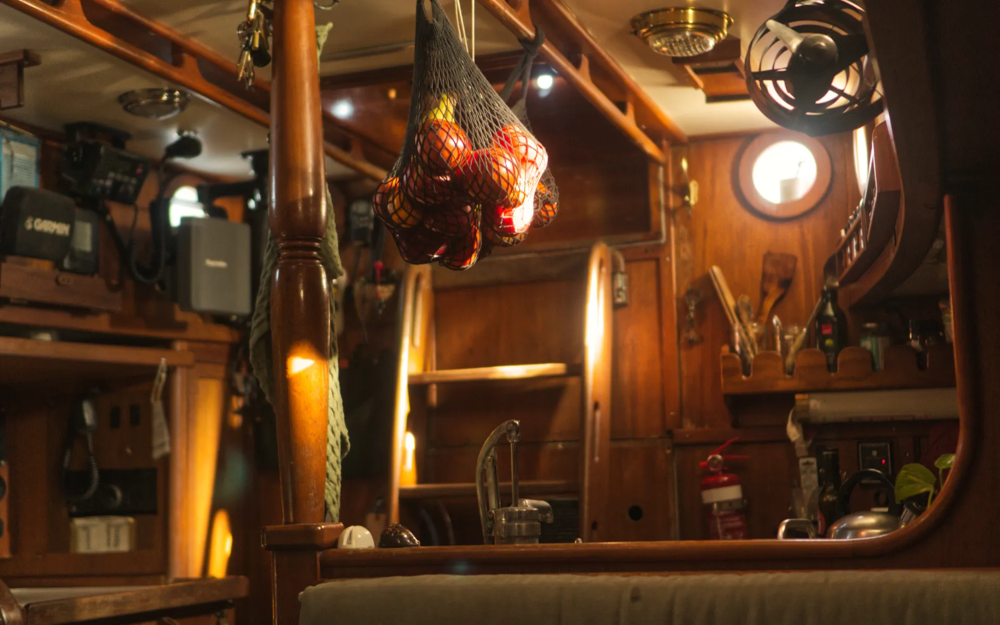
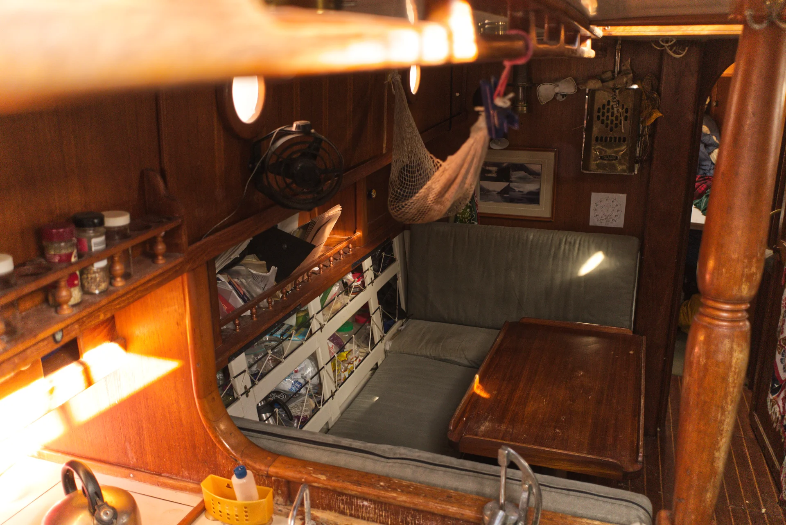
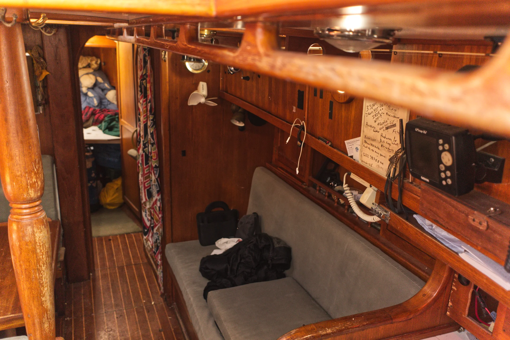
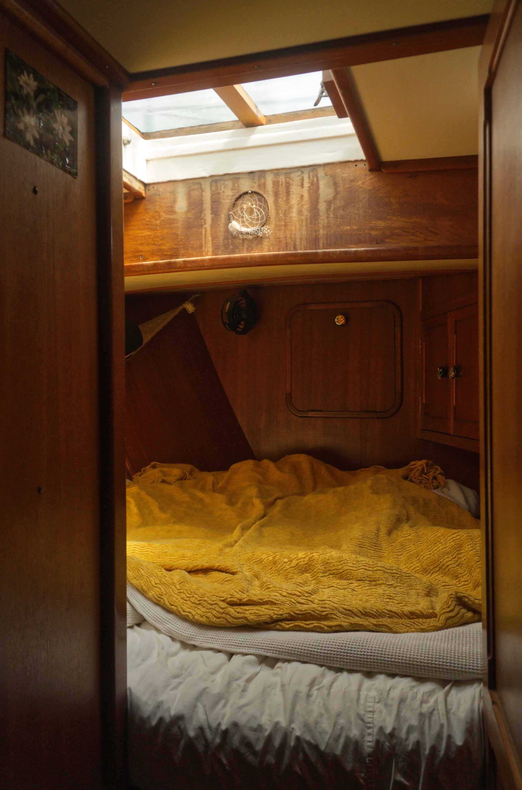
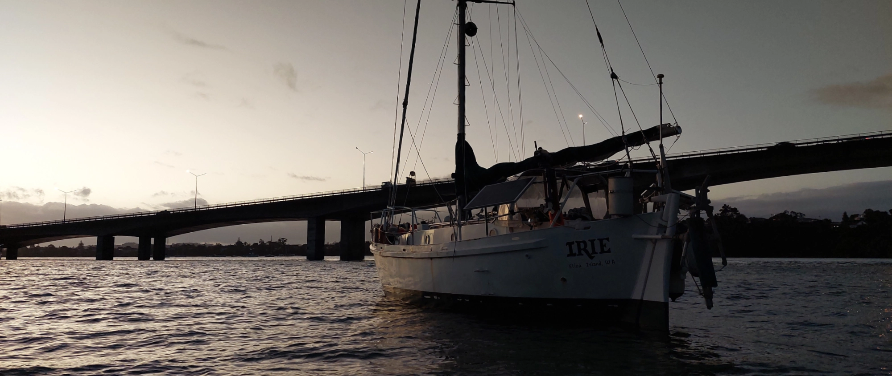

Home
Irie is a 33' cutter rigged, full keel custom built Tahitiana. She is 12 tonnes, made of steel, with a beautifully crafted teak interior. Irie is a heavy displacement expedition style sailboat designed for high latitude sailing. The legend has it that it was built for a trip to Antarctica.
Irie is currently for sale and looking for a new owner.
Located in a liveaboard boatyard in Whangarei, New Zealand.
Hayday










To get a boat tour and view the current state of the boat, check out the Refit page for photos and details.